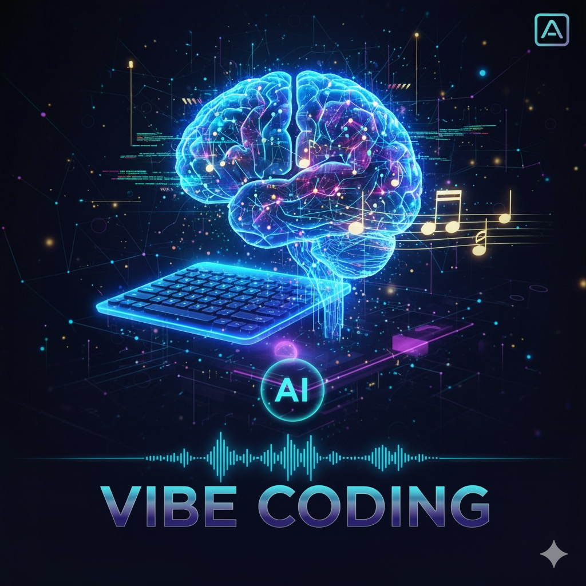
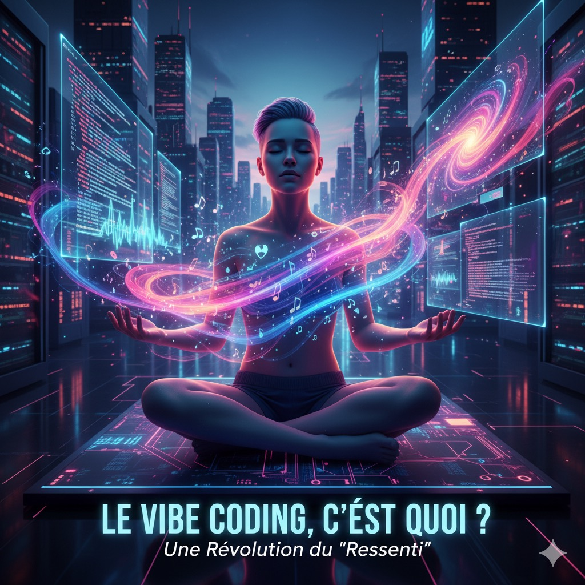
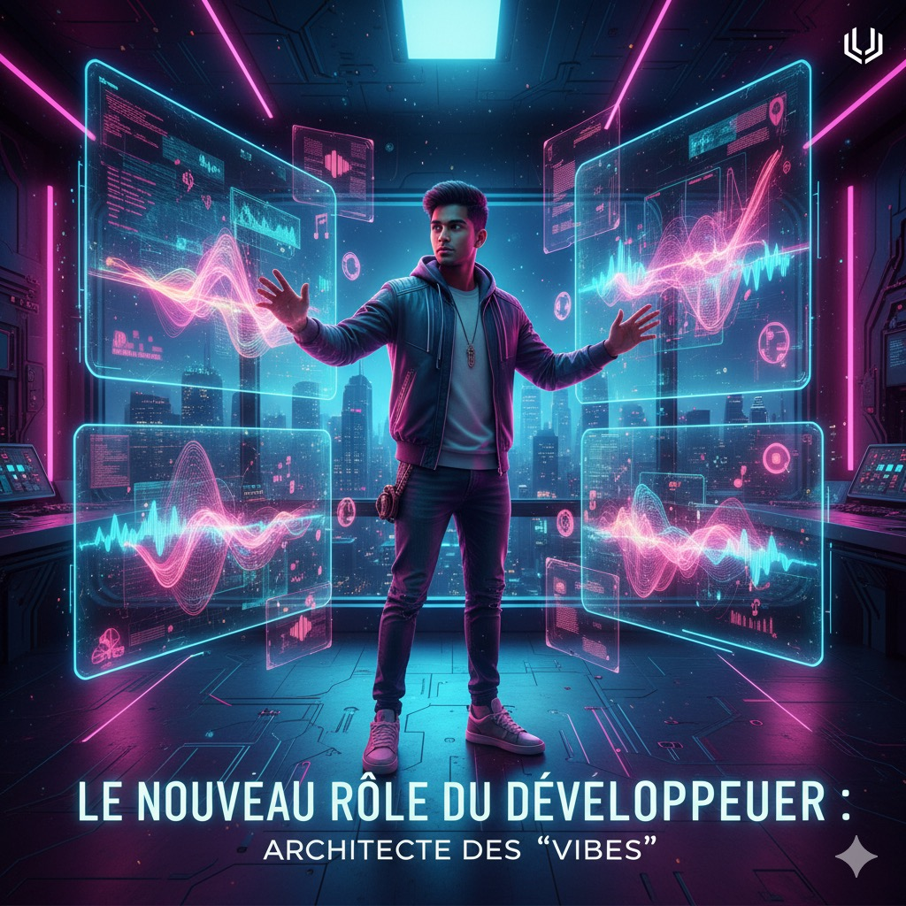

Vibe Coding : Quand l'IA donne le « La » de la Programmation

✨ Le Vibe Coding, c'est quoi ? Une Révolution du "Ressenti"
Oubliez la tête baissée dans le code, les nuits passées à traquer une virgule manquante. Le Vibe Coding (ou Codage par Ambiance) est la nouvelle approche qui bouscule le monde du développement logiciel.
Né de l'essor des grands modèles de langage (LLM) comme Gemini Code Assist, GitHub Copilot ou Cursor, ce terme, popularisé par des experts comme Andrej Karpathy, décrit une méthode où l'on décrit le résultat souhaité en langage naturel pour que l'IA génère le code fonctionnel.
Le développeur passe du rôle d'artisan de la syntaxe à celui d'architecte de l'intention. On ne se demande plus comment écrire le code, mais plutôt quelle ambiance l'application doit dégager, quelle fonctionnalité elle doit offrir. C'est l'ère de la programmation au "feeling" (vibe), où l'intuition guide la création.

🚀 Les Promesses : Vitesse, Créativité et Accessibilité
- Vitesse de Prototypage Accrue : Une idée le matin ? Un prototype fonctionnel le soir. L'IA gère les tâches répétitives, le boilerplate et les intégrations de base en quelques secondes.
- Démocratisation : Plus besoin d'être un ingénieur full-stack chevronné pour créer une application. Les novices peuvent décrire leur vision et voir l'IA la concrétiser.
- Fluidité et Créativité : En se libérant de la charge mentale de la syntaxe, le développeur peut se concentrer sur l'architecture globale, la logique métier et l'innovation.
⚠️ Les Zones d'Ombre : Attention au "Trust but Don't Verify"
- Qualité et Maintenabilité du Code : Un code généré par IA fonctionne souvent, mais est-il optimisé, bien structuré et facile à maintenir ?
- Sécurité : L'IA peut introduire par inadvertance des failles de sécurité dans le code généré. Une expertise humaine reste cruciale.
- L'illusion de la Facilité : Le Vibe Coding ne remplace pas l'expertise. Une solide compréhension des fondamentaux reste indispensable.
Le Challenge : Il faut trouver un équilibre entre la créativité intuitive de l'IA et la rigueur technique de l'humain.

Le Nouveau Rôle du Développeur : Architecte des "Vibes"
Le Vibe Coding n'est pas là pour remplacer les développeurs, mais pour redéfinir leur rôle. Les développeurs deviennent des "orchestrateurs du code". Leur valeur ne réside plus dans la rapidité de frappe des lignes, mais dans :
- La formulation de prompts précis et efficaces.
- L'audit critique et la validation du code généré.
- La conception d'architectures logicielles robustes.
Le succès en Vibe Coding passera par une approche hybride : utiliser l'IA pour la vélocité et les tâches répétitives, tout en conservant l'expertise humaine pour la qualité, la sécurité et la vision globale.
Le Vibe Coding est plus qu'une tendance, c'est un changement de paradigme. Il reste aux professionnels de la tech de l'apprivoiser pour en faire un levier d'innovation, et non un piège de la superficialité.